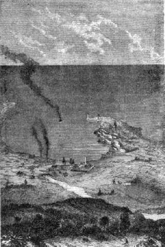
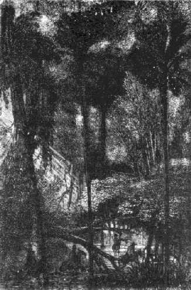

Capítol XIII
STONE'S - HILL
Després de l'elecció
feta pels membres del Gun-Club en detriment de Texas, tothom a Amèrica
-on tots saben llegir - s'imposà com un deure d'estudiar la geografia
de la Florida. Mai els llibreters no havien venut tants Bartram's travel in
Florida, de Roman's natural history of East and West Florida, de William's territori
of Florida, de Cleland on the culture of the Sugar-Cane in East Florida. Calgué
reimprimir noves edicions. Allò era una bogeria.
Brbicane tenia molt més a fer que llegir. Volia veure amb els seus propis
ulls i assenyalar l'emplaçament del Columbiad. Així fou que, sense
perdre un instant, va posar a disposició de l'observatori de Cambridge
els cabals necessaris per a la construcció d'un telescopi i féu
tractes amb la casa Breadwill i Companyia, d'Albany per a la confecció
del projectil d'alumini. Després partí de Baltimore acompanyat
de J.-T. Maston, el major Elphiston i el director de la fàbrica de Goldspring.
L'endemà, els quatre companys de viatge arribaren a Nova-Orleans. Allí
s'embarcaren immediatament en el Tampico, avís de la marina federal que
el Govern posava a llur disposició, i, amb les calderes reviscolades,
les costes de la Lluïsiana els desaparegueren ben aviat dels ulls.
La travessia no fou gaire llarga. Dos dies després de la seva sortida,
i havent recorregut el Tampico quatre-centes vuitanta milles, fou albirada la
costa floridenca. Tot apropant-s'hi, Barbicane es veié en presència
d'una terra baixa, aplanada, d'aspecte bastant infèrtil. Després
d'haver-se apartat d'un seguit de cornaleres plenes d'ostres i de crancs, el
Tampico entrà en la badia d'Espíritu Santo.
Aquesta badia es divideix en dues rades allargades, la rada de Tampa i la rada
d'Hillisboro, en la qual el vaixell franquejà tot seguit la gola. Poc
més tard, el fort Brooke dibuixà les seves bateries fregant-les
per damunt les ones, i la ciutat de Tampa aparegué negligentment estesa
al fons del petit port natural format per l'embocadura del riu Hillisboro.
Fou allí que el Tampico ancorà el 22 d'octubre, a les set del
vespre, i els quatre passatgers desembarcaren tot seguit.
Barbicane sentí batre el cor amb violència així que trepitjà
la terra floridenca. Semblava sondejar-la amb el peu, com l'arquitecte d'una
casa per provar-ne la solidesa. J.-T. Maston escarbotava la terra amb l'extrem
del seu ganxo.
-Senyors - digué Barbicane -, no tenim temps per a perdre, i a partir
de demà muntarem a cavall per reconèixer el país.
Al moment de posar Barbicane els peus a terra, els tres mil habitants de Tampa-Town
li anaren a l'encontre. Honor ben degut al president del Gun-Club, que els havia
afavorits amb la seva elecció. Fou rebut enmig de formidables aclamacions;
però Barbicane, defugint tota ovació, passà a ocupar una
cambra de l'hotel Franklin sense voler rebre ningú. Decididament, l'ofici
d'home cèlebre no era cosa per a ell.

Tampa-Town
L'endemà, 23 d'octubre, uns petits cavalls de raça espanyola,
plens de vigor i ardorosos, renillaven sota les finestres. Però en lloc
de quatre n'hi havia cinquanta, amb llurs cavallers. Barbicane baixà,
acompanyat dels seus companys, i de moment se sorprengué en trobar-se
enmig d'una semblant cavalcada. Remarcà, a més, que cada cavaller
portava una carrabina en bandolera i pistoles als costats. La raó d'un
tal desplegament de forces li fou donada de seguida per un jove floridenc.
-Senyor - li digué -, hi ha semínoles.
-Què són semínoles?
-Uns salvatges que corren per les prades, i ens ha semblat prudent de fer-vos
escorta.
-Bah! - féu J.-T. Maston pujant a la seva muntura.
-I també - acabà el floridenc - per a més seguretat.
-Senyors - respongué Barbicane -, us agraeixo la vostra atenció,
i ara en camí.
La petita tropa esperonà tot seguit i desaparegué dins d'un núvol
de pols. Eren les cinc del matí, el sol lluïa i el termòmetre
marcava 84º1, però fresques brises de mar suavitzaven
l'excessiva temperatura.
Barbicane, en deixar Tampa-Town, va descendir devers el sud i seguí la
costa, a fi de guanyar el creek d'Alifia. Aquest rierol va a parar a la badia
Hillisboro, dotze milles més avall de Tampa-Town. Barbicane i la seva
escorta costejaren la riba de la dreta tot pujant cap a l'Est. Ben aviat les
onades de la badia desaparegueren darrera un plec del terreny i la planúria
floridenca va oferir-se als seus ulls.
La Florida es divideix en dues parts. L'una, la del nord, és més
populosa i menys abandonada, té Tallahassee per capital, i Pensacola,
un dels principals arsenals marítims dels Estats Units. L'altra part,
oprimida entre l'Atlàntic i el golf de Mèxic, que l'estrenyen
amb llurs aigües, gairebé no és més que una minsa
illa rosegada pel corrent del Gulf-Stream, punta de terra perduda al mig d'un
petit arxipèlag i per on tomben contínuament els nombrosos navilis
que naveguen pel canal de Bahama. És el sentinella avançat del
golf de les grans tempestes. La superfície d'aquest Estat és de
trenta-vuit milions trenta-tres mil dos-cents seixanta-set acres2,
entre els quals convenia escollir una superfície situada per la banda
del vint-i-vuitè paral·lel i adequada a l'empresa. Barbicane,
tot cavalcant, escorcollava atentament la configuració del sòl
i la seva disposició particular.
La Florida, descoberta per Joan Ponce de León en 1512, en el dia dels
Rams, fou anomenada de moment Pasqües Florides. No era gaire mereixedora
d'aquesta encisadora apel·lació amb ses costes àrides i
ardents. Però algunes milles terra endins la naturalesa del terreny canvia
a poc a poc i el país es mostra digne del seu nom. El sòl estava
entrecreuat per una xarxa de rierols, rieres, cursos d'aigua, estanyols i petits
llacs. Hom creuria trobar-se a Holanda o a la Guaiana, però el camp anà
aixecant-se sensiblement i mostrà ben aviat les seves planes cultivades,
on florien totes les produccions vegetals del nord i del sud, els seus camps
immensos en què el sol dels tròpics i les aigües conservades
dins l'argila del terreny recompensaven amb escreix tot el treball del conreu
amb les seves plantacions d'ananàs3, icacs, tabac,
arròs, cotó i canyes de sucre que s'estenien fins a perdre's de
vista, tot exhibint llurs riqueses amb una descurada prodigalitat.
Barbicane semblà molt satisfet de constatar l'enlairament progressiu
del terrer, i quan J.-T. Maston va interrogar-lo a aquest respecte:
-Amic meu - li respongué -, tenim un interès de primer ordre a
fer fondre el nostre Columbiad en terreny alt.
-Per estar més a prop de la Lluna? - digué el secretari del Gun-Club.
-No - respongué Barbicane tot somrient -. ¿Què ens importen
algunes toeses de més o de menys? No, però enmig de terrenys enlairats
els nostres treballs rutllaran més fàcilment; no haurem tampoc
de lluitar amb les aigües, amb la qual cosa ens estalviarem d'instal·lar
canonades llargues i costoses, i això bé val la pena de considerar-ho
tractant-se de foradar un pou de nou-cents peus de profunditat.
-Teniu raó - digué llavors l'enginyer Murchison -; convé,
tant com sigui possible, evitar els cursos d'aigua durant el foradament; però,
si trobem fonts -que això no vol dir res -, les buidarem amb les bombes
o bé les desviarem. No es tracta ací d'un pou artesià4,
estret i fosc, on la plantilla, la galleda i la sonda, en una paraula, tots
els estris de foradar, treballen a cegues. No. Nosaltres treballarem a cel obert,
en ple dia, amb el càvec o el pic a la mà, i amb bona cara anirem
fent feina.
-Amb tot - tornà Barbicane -, si per l'elevació del terreny o
la seva naturalesa podem evitar una lluita amb les aigües subterrànies,
el treball esdevindrà més ràpid i millor. Procurem, doncs,
obrir el nostre forat en un terreny situat a alguns centenars de toeses damunt
del nivell del mar.
-Teniu raó, senyor Barbicane, i si no m'enganyo trobarem dintre de poc
un lloc convenient.
-Ah! ja voldria haver donat el primer cop de picot president.
-I jo el darrer! - exclamà J.-T. Maston.
-Tot arribarà, senyors - respongué l'enginyer -, creieu-me, la
companyia del Goldspring no us haurà de pagar cap indemnització
pel retard.
-Santa Bàrbara! Vós teniu raó! - replicà J.-T. Maston
-, cent dòlars per dia fins que la Lluna es presenti en les mateixes
condicions és a dir, durant divuit anys i onze dies, ¿sabeu bé
que això pujaria tot plegat sis-cents cinquanta-vuit mil dòlars?
-No senyor, no ho sabem - respongué l'enginyer -, ni tampoc tenim necessitat
de saber-ho.
Vers les deu del matí, la petita tropa havia recorregut una dotzena de
milles; als camps fèrtils succeïa llavors la regió dels boscos.
Allí creixien les essències més variades amb una profusió
tropical. Aquells boscatges gairebé impenetrables estaven compostos de
magraners, tarongers, llimoners, figueres, oliveres, albercoquers, bananers
i de grossos ceps de vinya on els fruits i les flors rivalitzaven en colors
i en perfums. A l'ombra flairosa d'aquells arbres magnífics cantava i
volava tot un món d'ocells de colors brillants, enmig dels quals es distingien
molt particularment els cranquers, en què el niu havia d'ésser
un joier digne d'aquells joiells emplomissats.
J.-T. Maston i el major no es podien trobar en presència d'aquella opulenta
naturalesa sense deixar d'admirar-ne les esplèndides belleses. Però,
en canvi el president Barbicane, poc sensible a aquelles meravelles, tenia pressa
a anar endavant. Aquell país tan fèrtil li desplaïa per la
seva mateixa fertilitat; sense ser hidroscòpic, sentia l'aigua sota els
peus i cercava en va els senyals d'una aridesa incontestable.
Malgrat tot, s'anava avançant. Calgué passar a gual diversos rius,
i no sense algun perill, car estaven infestats de caimans llargs de quinze a
divuit peus. J.-T. Maston els amenaçà ardidament amb el seu temible
ganxo, però només arribà a espantar els pelicans, xarxets
i faetons, salvatges habituals d'aquelles ribes, mentre que els grans flamencs
vermells els guaitaven amb un aire estúpid.

Va caldre passar a gual diversos rius
Per fi aquells hostes del països humits desaparegueren a llur torn. Arbres
menys corpulents s'escamparen pels boscos menys espesseïts. Alguns grups
d'ells, aïllats, es destacaren al mig de planúries infinites per
on passaven ramats de daines esporuguides.
-Per fi! - cridà Barbicane aixecant-se sobre els seus estreps -, heus
aquí la regió dels pins!
-I la dels salvatges - respongué el major.
En efecte, alguns semínoles aparegueren a l'horitzó. Es movien,
corrien d'un costat a l'altre damunt de llurs cavalls ràpids brandant
llargues llances o descarregant llurs fusells de detonació sorda, però
es limitaren només a fer aquestes demostracions hostils, sense arribar
a inquietar Barbicane i els seus companys.
Aquests es trobaven aleshores al mig d'una planúria rocosa, vast espai
descobert en una extensió de molts acres i que el sol inundava amb els
seus raigs ardents. El terreny presentava una llarga rampa que semblava oferir
als membres del Gun-Club totes les condicions requerides per a la instal·lació
del seu Columbiad.
-Alto! - digué Barbicane tot deturant-se. ¿Quin nom té
en el país aquest indret?
-S'anomena Stone's-Hill5 - respongué un dels floridencs.
Barbicane, sense dir res més, posà el peu a terra, prengué
els seus instruments i començà a aixecar la seva posició
amb una extrema precisió. La petita tropa arrenglerada al voltant d'ell
se'l mirava tot guardant un profund silenci.
En aquell moment el Sol passava pel meridià. Barbicane, després
d'alguns instants, anotà ràpidament el resultat de les seves observacions
i digué:
-Aquest emplaçament es troba situat a tres-centes toeses damunt el nivell
del mar per 27º 7´ de latitud i 5º 7´ de longitud Oest6,
i em sembla que ofereix per la seva natura àrida i rocallosa totes les
condicions favorables per a l'experiment. Així, doncs, serà en
aquest planell on s'aixecaran els nostres magatzems, tallers, fornals i les
barraques dels nostres obrers, i és d'aquí estant, d'aquí
mateix - repetí tot picant amb el peu el cim de Stone's-Hill -, que el
nostre projectil partirà devers els espais del món solar!
1. Del termòmetre Fahrenheit. Això és,
28 graus centígrads.
2. Quinze milions tres-centes seixanta-cinc mil quatre-centes
quaranta hectàrees.
3, Planta en forma de pinya, carnosa, molt flairosa i terminada
en una corona de fulles.
4. S'estigueren nou anys a foradar el pou de Grenelle, d'una
fondària de cent quaranta-set metres.
5. Turó de pedres.
6. Del meridià de Washington.